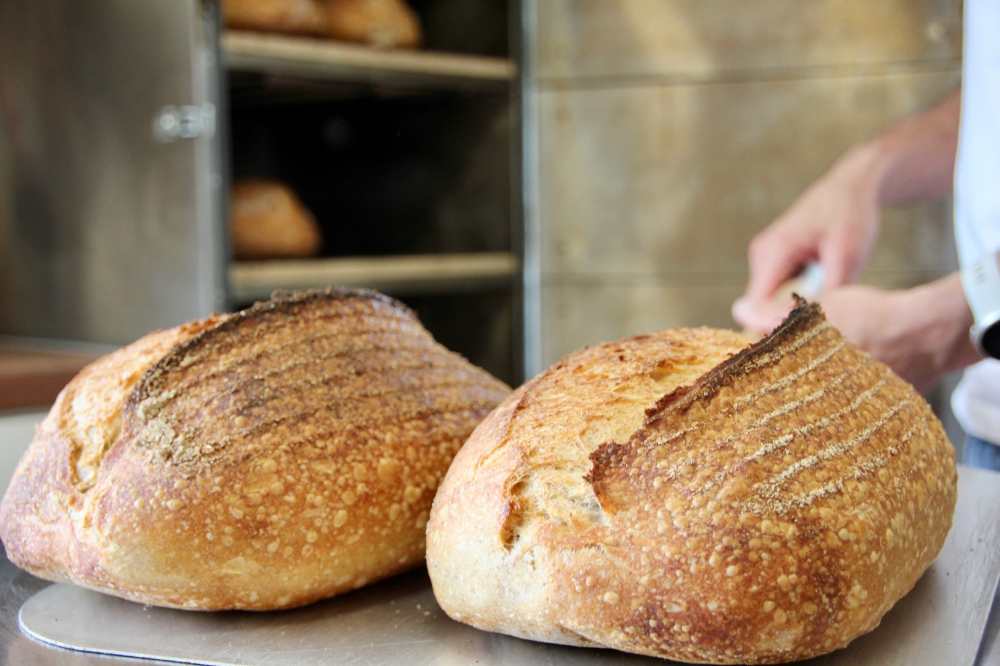

Award-winning microbakery on Northern Ireland's north coast and on-site bakery at Peatlands, Causeway Coast offering guests artisan sourdough bread, cookies and breakfast patisserie.
Pete's Bread is a micro bakery in the beautiful Causeway Coast area of Northern Ireland specialising in nutritious, naturally-leavened, country-style sourdough bread.

What people say:
"My favourite ever sourdough."
"The best bakes in town - Saturday mornings have never been looked forward to with so much anticipation!"
"Whoever we introduce to your bread - without exception - loves it."
Process
Pete's Bread sourdough is made from a blend of speciality flours, water and sea salt with no artificial ingredients, flour improvers or preservatives. Each loaf takes around 32 hours to make; they're hand-shaped, proofed slowly in wood pulp bannetons and baked in a stone oven to a golden brown crust. The long, slow fermentation process produces a tastier, more digestible loaf with a wild open crumb.

Real Bread
Pete's Bread is REAL sourdough bread, made with only three ingredients; flour, water and sea salt.
No additives. No industrial yeast.
Pete's Bread is a member of the Real Bread Campaign.

Award Winning
Pete's Bread signature sourdough the Peatlands Loaf won a GOLD award in the Tiptree World Bread Awards 2022.

Food you can trust
Pete's Bread bakery carries a 5-star Food Hygiene rating, awarded by Causeway Coast & Glens Borough Council
Stay at Peatlands / Pete's Bread
Stay at Peatlands and have your bakes delivered fresh to your luxury shepherd's hut accommodation.
 LEARN MORE
LEARN MORE
Meet Pete
Pete Hathaway is a self-taught baker who has been running his micro bakery and supplying his local community since 2021. He specialises in making country-style sourdough bread using speciality flours.
Pete's Bread micro bakery was established in Oxford, England when Pete's passion for baking sourdough at home for family and friends grew into a small business - baking bread, patisserie and other sweet treats and delivering them around the neighbourhood by bike, every Saturday morning. Back then, the bakery was housed in a small 2.5m wooden cabin at the bottom of the garden!
In 2022, Pete, his family and his microbakery all relocated to the Causeway Coast, Northern Ireland.
His signature sourdough 'The Peatlands Loaf' won a Gold award in the 2022 World Bread Awards.
Pete's sourdough and patisserie is now available exclusively to guests at Peatlands Causeway Coast.